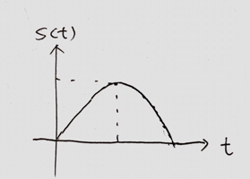
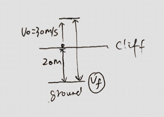
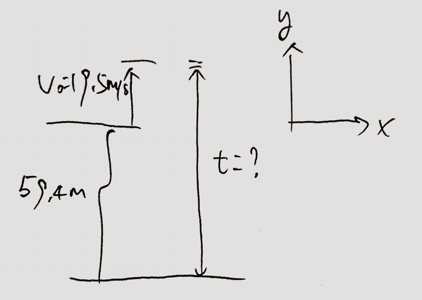

Straight-line motion, average and instantaneous x-velocity:
vavv=ΔtΔx=t2−t1x2−x1=Δt→0limΔtΔx=dtdx
Average and instantaneous x-acceleration:
aava=ΔtΔv=v2−t1v2−x1=Δt→0limΔtΔv=dtdv
Straight-line motion with constant acceleration
When the x-acceleration is constant, four equations relate the position x and the x-velocity v at any time t to the initial position x0, the initial x-velocity v0 (both measured at time t=0), and the x-acceleration a.
[t0,t2], Moving backward at a constant acceleration. [t2,t4], Moving forward at a constant acceleration. [t4,t6], At rest. [t6,), Moving forward at a constant accleration.
2. Grasshopper jumps upward, and reaches a max height of 1m. Find the total time it is in the air. (up and down).

Solution
When the grasshopper reaches the max height, vf=0m/s.
When the grasshopper finally hits the ground, yf=0m
yf0⇒t=v0t+21at2=19.6t+21⋅9.8⋅t2≈0.89s
3. An object is thrown upward on a cliff 20m from the ground at an intial velocity of 30m/s. Find the final velocity before it hits the ground.
b. Find how long is the object in the air.

Solution
a. According the kinematic equation, vf2=v02+2ay. We have v0=−30m/s,a=9.8m/s2,y=20m (moving downward being positive direction).
vf2⇒=(−30)2+2⋅9.8⋅20vf=1292m/s≈35.94m/s
(Mid Term 1) A stone is thrown outward from the top of a 59.4-m high cliff with an upward velocity component of 19.5m/s. How long is the stone in the air.
